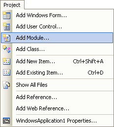
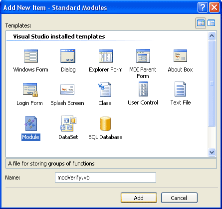
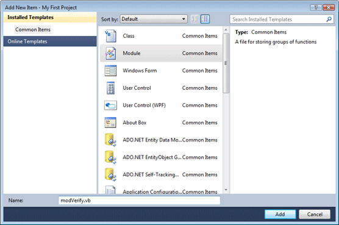
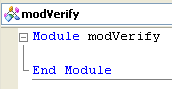
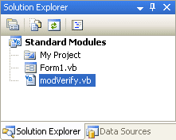
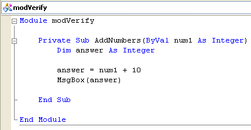

Standard Modules in VB .NET
This lesson is part of an ongoing tutorial. The first part is here: Create your own Subs in VB .NET
The Subs and Functions worked perfectly well where they were - inside the two lines "Public Class Form1" and "End Class". If you tried to put them on a line underneath End Class you would get lots of blue wiggly lines under your code.
That's because the code all belongs to Form1. But it doesn't have to. In fact, it's better to separate all your Functions and Subs and put them somewhere else - in something called a Module. We'll explore the Standard Module, and see how to move our Functions and Subs outside of Form1. That way, we can use them in other projects.
So start a new project. Add a button to you new form. To add a Module to your project in version 2008 and 2012,, click Project from the menu bar. From the menu, click on Add Module:

In VB .NET Express version 2010, just click Project > Add New Item.
When you click Add Module (or Add New Item), you'll see something like this dialogue box popping up (2008 version of the software):

Or this one, in the 2010 edition (the 2012 edition has a less colourful version of the one below):

Select Module from the Templates window. Type a name for your new module - modVerify.vb. When you've typed a name, click the Open button.
You'll should see a blank window, with this code in it:

If you take a look at the Solutions Explorer on the right, you should see that your new module is listed:

In between Module modVerify and End Module, type the following Subroutine:
Private Sub AddNumbers(ByVal num1 As Integer)
Dim answer As Integer
answer = num1 + 10
MsgBox(answer)
End Sub
Your coding window should now look like this:

Now click back on your form and double click the button you added. This will bring up the code window for the Form, and the cursor will be flashing inside of the button code.
No more reading these lessons online - get the eBook here!
Add the following code for your button:
Call AddNumbers(10)
When you press the return key, you'll see a blue wiggly line under the Sub name. If you hold your mouse over AddNumbers, you might see this:

Because this lesson is a bit long, we'll continue it on the next page.